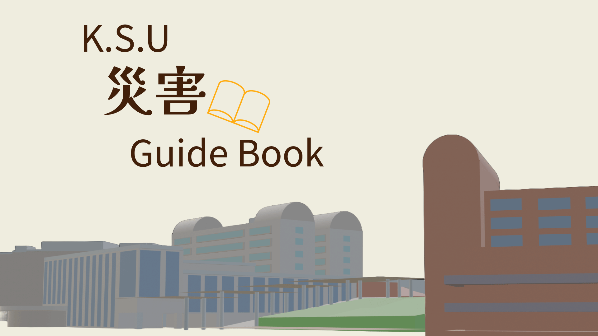
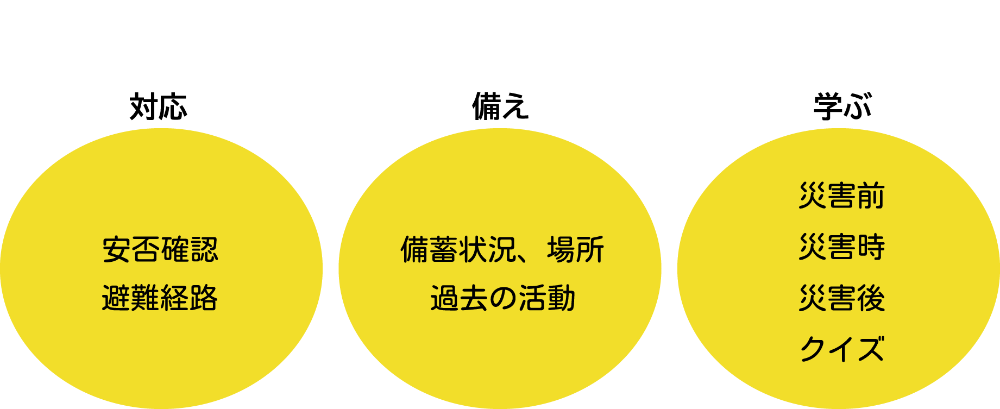

このサイトについて
当サイトは、九産大の学生に防災や減災についての情報を提供するサイトです。大学の避難場所や貯蓄状況、場所など災害時以外にも役立つ情報を掲載しています。

このページでは、大学の安否確認や避難経路について、備えのページでは大学の現在の備蓄状況、場所、過去の九産大の災害関係の活動、学ぶのページでは災害前、災害時、災害後に使える知識を掲載した記事、災害についてのクイズを掲載しています。
災害の対応
緊急連絡先について
自然災害等が発生した際に大学に救援、相談したい場合、学生課 TEL:092-673-5571 に連絡することができます。
また、大学以外にも自然災害で被災地への通話が繋がりにくくなった際に利用できる災害用伝言ダイヤルというものがあります。171にダイヤルし、録音する場合には「1」、再生する場合には「2」をダイヤルします。30秒以内の伝言が可能です。
九産大の避難場所
九州産業大学の緊急避難場所は陸上競技場、球技場になっています。災害時には緊急避難場所へ速やかに避難してください。
避難経路
普段使う教室からの避難経路を把握していますか？いつ起こるか分からない自然災害に備えて避難経路を確認しておきましょう。